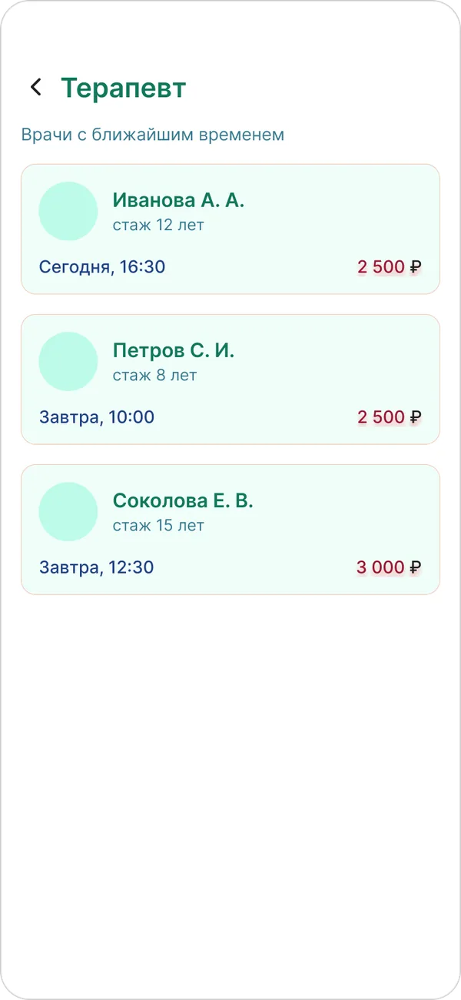
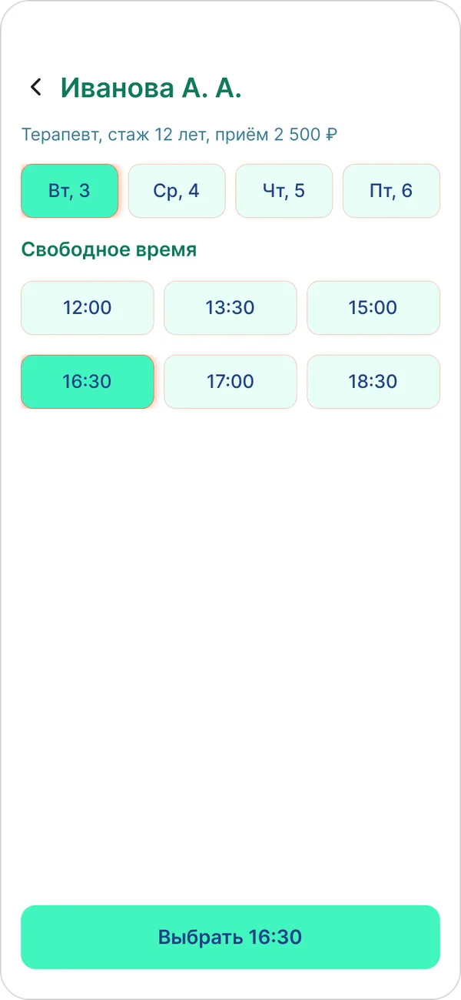
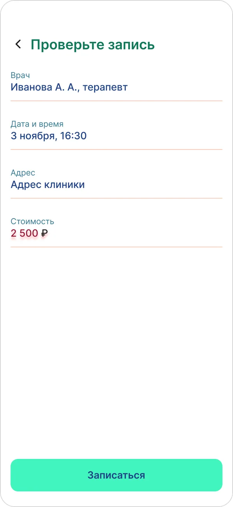
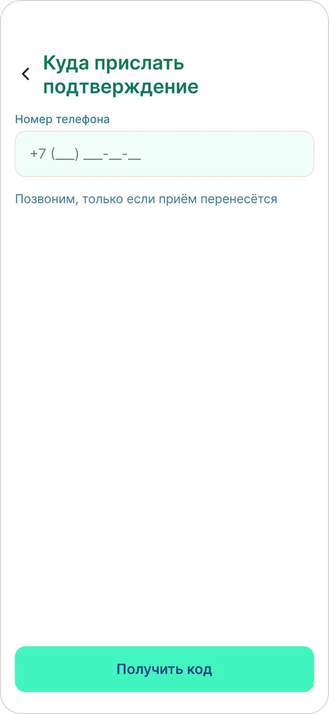
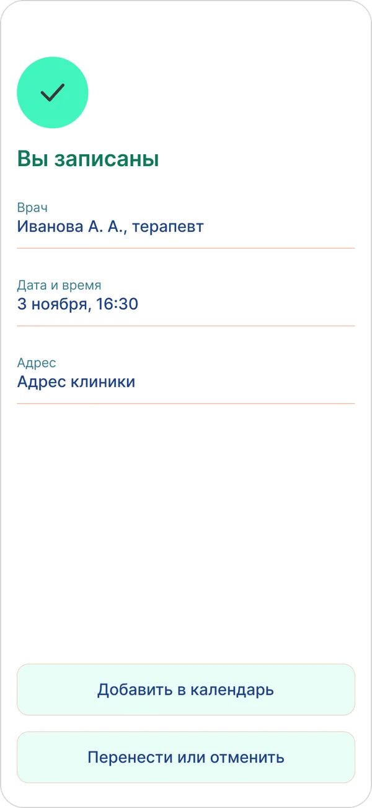
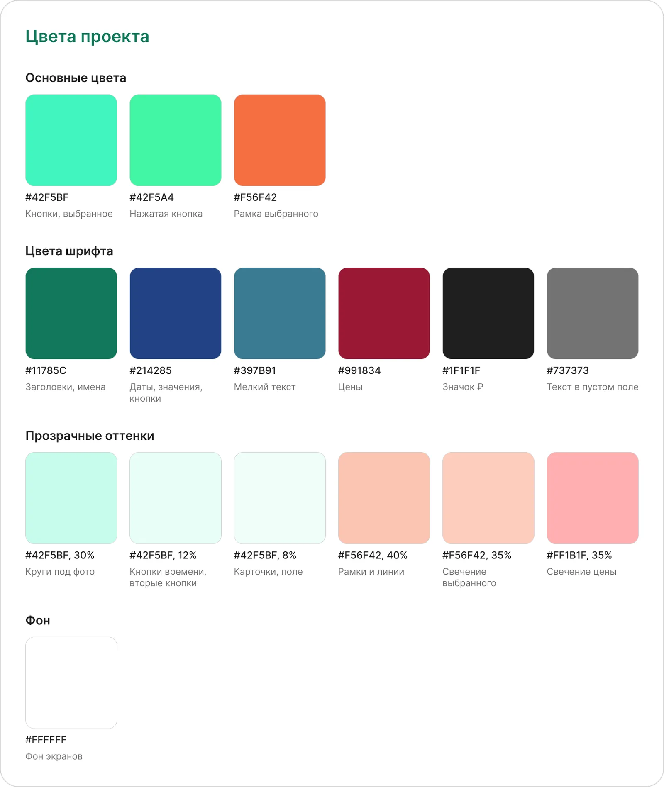

Запись к врачу (новый порядок шагов)
С чего началось: в своём UX-разборе записи к терапевту я нашла 10 проблем. Одна из самых серьёзных: запись начинается со входа по номеру телефона. До него не видно ни врачей, ни свободного времени, ни цены.
Задача пользователя: "Хочу записаться к терапевту на ближайшую дату, с телефона".
Идея: поменять порядок шагов. Сначала человек видит врачей, время и цену, а номер оставляет, когда уже решил записаться.
Мой вклад: выбрала проблему из своего разбора, определила новый порядок шагов, задала всю цветовую систему, роли цветов шрифта, рамки и свечения, проверила контраст. Серую основу экранов и компоненты собрала с помощью Claude по этому описанию, дальше дорабатывала их в Figma.
- Figma
- Мобильные экраны
- Компоненты
- Цветовая система
- Контраст WCAG
- Путь пользователя
5
экранов от выбора врача до подтверждения4 из 5
шаг, где спрашиваем телефон, раньше он был первым8
компонентов для кнопок, карточек, времени и полей4,76:1
самый низкий контраст текста на белом при норме 4,5:1Проблема
Человек должен отдать номер телефона раньше, чем поймёт, есть ли подходящее время и сколько стоит приём. Особенно это мешает тем, кто пока только сравнивает клиники: им нужно узнать цену и время, а не заводить личный кабинет.
В разборе я отнесла эту проблему к высокой важности и связала её с двумя эвристиками Нильсена: свобода и контроль пользователя, видимость состояния системы.
Как изменился путь
Было
- Вход по номеру телефона
- Только потом врачи, время и цена
Стало
- Выбор врача: видно стаж, время и цену
- Выбор дня и часа
- Проверка записи
- Телефон
- Готово
Экраны
#1 Выбор врача
Что на экране
Человек сразу видит трёх терапевтов. На карточке всё, что нужно для решения: имя, стаж, ближайшее время и цена.
Почему так
В старом пути это можно было узнать только после входа по телефону. Здесь сравнить врачей можно без всякой регистрации, и ближайшее время стоит на первом экране, потому что задача звучит как "на ближайшую дату".


#2 Врач и время
Что на экране
Сверху дни, ниже свободные часы, внизу кнопка с выбранным временем: "Выбрать 16:30".
Почему так
Время в кнопке подтверждает выбор прямо на месте нажатия, не надо искать глазами, что отмечено. Выбранный день и час выделены мятной заливкой, тонкой рамкой и мягким свечением, поэтому их видно сразу.


#3 Проверка записи
Что на экране
Врач, дата и время, адрес и стоимость собраны на одном экране перед подтверждением.
Почему так
Человек видит всю запись целиком до того, как оставит данные. Если что-то не подошло, он возвращается назад, а не исправляет уже созданную запись. Цена выделена красным, чтобы её нельзя было пропустить.


#4 Телефон
Что на экране
Единственный вопрос: куда прислать подтверждение. Под полем подпись: "Позвоним, только если приём перенесётся".
Почему так
К этому шагу человек уже выбрал врача и время, поэтому понимает, зачем нужен номер. Подпись снимает страх, что начнутся рекламные звонки. Заголовок говорит о пользе для человека, а не о входе в личный кабинет.


#5 Готово
Что на экране
Подтверждение "Вы записаны", детали приёма и две кнопки: добавить в календарь и перенести или отменить.
Почему так
Запись легко забыть и планы могут поменяться, поэтому оба действия стоят под рукой. Они оформлены второстепенными кнопками: главное действие на этом экране уже сделано.


Цвет и шрифт
Основа интерфейса: мятный #42F5BF для главных кнопок и выбранных элементов. Оранжевый #F56F42 работает как тонкая рамка выделения. Шрифт Inter.
Чёрно-белые детали я заменила прозрачными оттенками тех же цветов: карточки и поля получили мятную заливку 8%, кнопки времени 12%, рамки и линии стали оранжевыми с прозрачностью 40%. Экран остаётся светлым, но не выглядит серым.
Текст я разделила по ролям, чтобы цвет сразу подсказывал, что перед тобой: имя, время или цена.
| Цвет | Роль | Контраст |
|---|---|---|
| #214285 | даты, значения, кнопки | 9,62:1 на белом, 6,89:1 на мятной кнопке |
| #11785C | заголовки и имена врачей | 5,43:1 на белом |
| #991834 | цены | 8,29:1 на белом |
| #397B91 | мелкий текст | 4,76:1 на белом |


Компоненты
Повторяющиеся элементы собраны как компоненты: главная, нажатая и вторая кнопки, обычное и выбранное время, карточка врача, строка записи, поле ввода. Новый цвет, заданный в компоненте, сразу применяется на всех экранах, а экраны не расходятся между собой.
Что дальше
Это концепт, на людях он пока не проверялся, поэтому я не обещаю рост записей. Следующие шаги:
- собрать кликабельный прототип и дорисовать экран ввода кода из СМС;
- дать прототип 2-3 людям с задачей "запишись к терапевту" и посмотреть, где они запнутся;
- проверить, достаточно ли заметно нажатие: цвет нажатой кнопки близок к основному.